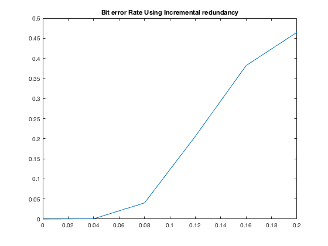
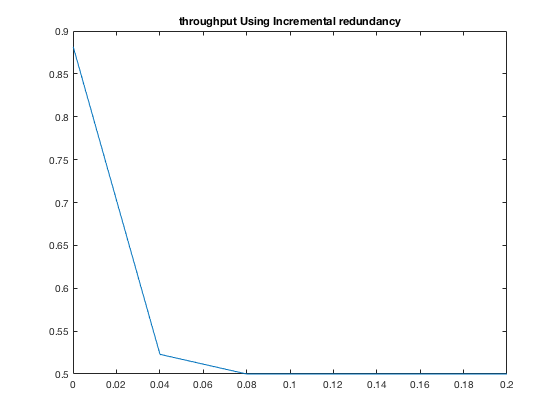

clc
clear all
obj = VideoReader('highway.avi');
a= read(obj);
frames=get(obj,'NumberOfFrames');
for i=1:frames
I(i).cdata=a(:,:,:,i);
end
s=size(I(1).cdata);
mov(1:frames) =struct('cdata', zeros(s(1),s(2), 3, 'uint8'),'colormap', []);
t = poly2trellis(7,[171 133]);
probvector=[0.0001:0.03998:0.2];
errorBitswithinc=zeros(1,length(probvector));
throughput=zeros(1,length(probvector));
punGeneral=[1 1 1 0 1 0 1 0 0 1 1 0 1 0 1 0;1 1 1 0 1 0 1 0 1 1 1 0 1 0 1 0;
1 1 1 0 1 1 1 0 1 1 1 0 1 1 1 0;1 1 1 1 1 1 1 0 1 1 1 1 1 1 1 0;1 1 1 1 1 1 1 1 1 1 1 1 1 1 1 1];
for idx = 1:length(probvector)
errornumber=0;
sentBits=0;
for Frame=1:frames
R=I(Frame).cdata(:,:,1);
G=I(Frame).cdata(:,:,2);
B=I(Frame).cdata(:,:,3);
[sz1,sz2]=size(R);
redBits=reshape(R,1,sz1*sz2);
[sz1,sz2]=size(G);
greenBits=reshape(G,1,sz1*sz2);
[sz1,sz2]=size(B);
blueBits=reshape(B,1,sz1*sz2);
redBits=double(redBits);
redBits=de2bi(redBits);
redBits=reshape(redBits,1,[]);
greenBits=double(greenBits);
greenBits=de2bi(greenBits);
greenBits=reshape(greenBits,1,[]);
blueBits=double(blueBits);
blueBits=de2bi(blueBits);
blueBits=reshape(blueBits,1,[]);
totalBits=horzcat(redBits,greenBits,blueBits);
length(totalBits);
length(totalBits)/1024;
pkts=reshape(totalBits,594,1024);
decoded=zeros(594,1024);
for i=1:594
j=1;
while j<=5
code = convenc(pkts(i,:),t,punGeneral(j,:));
p = probvector(idx);
recieved = bsc(code,p);
decoded(i,:) = vitdec(recieved,t,35,'trunc','hard',punGeneral(j,:));
if(decoded(i,:)==pkts(i,:))
sentBits=sentBits+length(code);
j=10;
else
j=j+1;
end
end
if(j==6)
sentBits=sentBits+length(code);
locs = pkts(i,:)~=decoded(i,:);
errornumber = errornumber+sum(locs);
end
end
totalBitsRecived=reshape(decoded,1,[]);
redBitsRecived=totalBitsRecived(1,1:202752);
greenBitsRecived=totalBitsRecived(1,202753:405504);
blueBitsRecived=totalBitsRecived(1,405505:608256);
redBitsRecived=reshape(redBitsRecived,25344,8);
redBitsRecived=bi2de(redBitsRecived);
redBitsRecived=uint8(redBitsRecived);
redBitsRecived=reshape(redBitsRecived,144,176);
greenBitsRecived=reshape(greenBitsRecived,25344,8);
greenBitsRecived=bi2de(greenBitsRecived);
greenBitsRecived=uint8(greenBitsRecived);
greenBitsRecived=reshape(greenBitsRecived,144,176);
blueBitsRecived=reshape(blueBitsRecived,25344,8);
blueBitsRecived=bi2de(blueBitsRecived);
blueBitsRecived=uint8(blueBitsRecived);
blueBitsRecived=reshape(blueBitsRecived,144,176);
mov(1,Frame).cdata(:,:,1) = redBitsRecived;
mov(1,Frame).cdata(:,:,2) = greenBitsRecived;
mov(1,Frame).cdata(:,:,3) = blueBitsRecived;
end
errorBitswithinc(idx)=errornumber;
throughput(idx)=(608256*30)/sentBits;
end
errorBitswithinc = errorBitswithinc./(608256*30);
figure(1)
plot(probvector,errorBitswithinc)
title('Bit error Rate Using Incremental redundancy')
figure(2)
plot(probvector,throughput)
title('throughput Using Incremental redundancy')
writer = VideoWriter('Videos.avi','Uncompressed AVI');
writer.FrameRate=obj.FrameRate;
open(writer);
writeVideo(writer,mov);
close(writer);
 